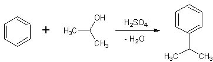

Dando un'occhiata alla mia piccola biblioteca virtuale di chimica organica preparativa mi è capitato di sfogliare un libro edito nel 1972 nella DDR, l'ex Repubblica "democratica" tedesca.
(A proposito, diffidare SEMPRE degli stati che hanno gli aggettivi "democratico" o "popolare" nella propria definizione: la vita in quei paesi è inesorabilmente opposta alla democrazia ed il popolo non partecipa di certo al governo... gli esempi certo non mancano).
In ogni modo, democratica o no, la Germania si è storicamente dimostrata fondamentale nella storia della chimica, soprattutto quella preparativa e industriale, ed anche la DDR del muro non era certamente da meno.
Il libro in questione è il Weygand-Hilgetag e suddivide il proprio contenuto (a cura di molti Autori) in maniera un po' insolita, come segue:
A- Reazioni in cui elementi diversi entrano in legame col carbonio
B- Reazioni dove si viene a formare un nuovo legame carbonio-carbonio
C- Reazioni dove viceversa si ha rottura del legame carbonio-carbonio
D- Reazioni nelle quali avvengono riarrangiamenti nella molecola
Un paragrafo della sezione B parla della alchilazione di composti aromatici per condensazione tra l'-Ar di un idrocarburo e l'-R di un alcol per eliminazione rispettivamente di idrogeno e dell'ossidrile e formazione di un nuovo composto a più atomi di carbonio.
Ho trovato una sintesi fattibile e ho voluto provare, anche se la procedura era descritta molto sommariamente e le speranze di buon esito erano abbastanza aleatorie (come poi si sono effettivamente dimostrate!).
Si tratta della sintesi del cumene (isopropilbenzene) per condensazione in ambiente acido del benzene con l'isopropanolo.
Qualche affezionato lettore penserà a questo punto che mi interessasse anche sentir l'odore del cumene... indovinato, proprio così!
La reazione di massima è la seguente:

Seguendo e integrando la striminzita procedura del Weygand, ho proceduto in questo modo:
-In un pallone a due colli da 250 ml intodurre 200 ml di H2SO4 all'80%, 25 g di benzene e 9,5 g di isopropanolo.
Si noti l'enorme eccesso ponderale di acido rispetto agli altri componenti.
Agitare bene e porre a riflusso per tre ore a 65°- In realtà a questa temperatura non bolle niente, si potrebbe forse evitare il refrigerante a ricadere.
Le fasi (una molto pesante e una molto leggera) si dividono inesorabilmente e occorre agitare di frequente; per questo motivo io ho lasciato reagire più a lungo delle tre ore, sperando di supplire in qualche modo all'eterogeneità della miscela, che non vuole rimanere in contatto.
Alla fine dopo raffreddamento decantare accuratamente la fase acida inferiore con un imbuto separatore e porre il residuo di colore bruno scuro in un palloncino da 100 ml per la successiva distillazione (vediamo cosa verrà fuori...).
Questa è stata la fase più frustrante, perchè in pratica è uscito quasi tutto il benzene indecomposto e quando la temperatura avrebbe dovuto salire fino ai 152° (p.e. del cumene) il palloncino era ormai quasi a secco!
Morale 1: resa praticamente zero, reagenti sprecati!
Morale 2: niente è del tutto sprecato, una esperienza in più rimane comunque ben salda.
Però se non altro l'odore penetrante e caratteristico del cumene l'ho sentito bene ed ora lo saprei riconoscere: l'unico accostamento che mi viene di fare per rendere l'idea è che assomiglia abbastanza alla trementina naturale (la somiglianza molecolare terpenoide c'è!).
Ecco il resoconto in diretta di come può nascere una sintesi nel lab di Paoloalbert; ogni tanto, come le famose ciambelle col buco, deve capitare una sintesi poco fortunata come questa, altrimenti sarebbe troppo bello!
Ora ritorniamo di là, c'è tutta la vetreria da pulire, altri reagenti scalpitano per sposarsi...